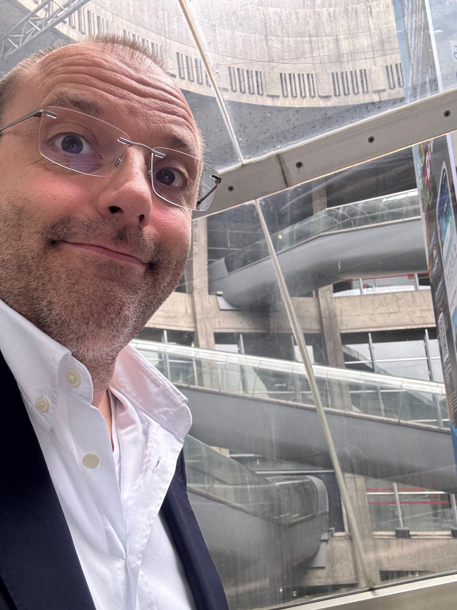

The Paris Motor Show is almost here. Beautiful new models will stir emotions and remind us why we love cars.
Design and driving pleasure are part of that fascination. Increasingly, so is intelligence: a car that understands what we ask and makes everyday journeys easier. And intelligence works both ways. AI can enrich the driver’s experience. It can also help manufacturers develop better products, validate them faster and build them more efficiently. A more desirable car and a more competitive business belong in the same conversation. At Capgemini, we will show this in Paris with demonstrations of how AI supports the engineering of hardware and software, manufacturing, and the customer experience. The part closest to my own work goes right down to the silicon. Bringing AI into the vehicle means deciding today which functions should run locally, how much computing power and memory they need, and who can support them over the vehicle’s life. Choosing a chip also means choosing a software ecosystem. That shapes what the car can do and how much room there is to improve it later. Handelsblatt recently looked at how BMW and Mercedes-Benz approach these choices, and I was glad to contribute. A summary credited to Taiwan’s International Trade Administration has since appeared on the leading Taiwanese financial portal MoneyDJ. It includes a point I raised: the AI boom intensifies carmakers’ competition with other technology sectors for high-performance computing and memory chip capacity. When supply is that contested, how do you get from now to next? You can adopt a new high-performance platform from one of the big vendors, with the lock-in that may come with it. You can design your own silicon-and we are happy to help! Or you can find a smart way to add intelligent acceleration to the architecture you already have. That third path is why I am watching companies like SiMa.ai, with its leaders Krishna Rangasayee and Harald (Harry) Kroeger. Their low-power Modalix chip is built to run AI models efficiently inside the vehicle. That is local intelligence a driver would actually notice: an assistant that still answers in a tunnel. Integration and validation still take real work, but there is scope to build on what already works. For me, the exciting engineering challenge is making intelligence useful, dependable and affordable enough to bring more joy to everyday driving. Wherever you are traveling from, join us at the Mondial de l’Auto and swing by the Capgemini stand. On Wednesday 14 October, Laurence Noël opens our conference day with new research on how AI is rewiring automotive product development. Let’s explore how AI can help make mobility more desirable and more affordable, while keeping our passion for cars very much alive! 📍 12–18 October · Paris Expo Porte de Versailles · Hall 7.1, Stand F26 MondialDeLAuto2026 Capgemini Claudia Hytrek 👉 Discover Capgemini’s program here:


The book I hand people who ask why chips keep turning up in foreign policy. Miller's case is that where you can make something decides who holds the leverage.